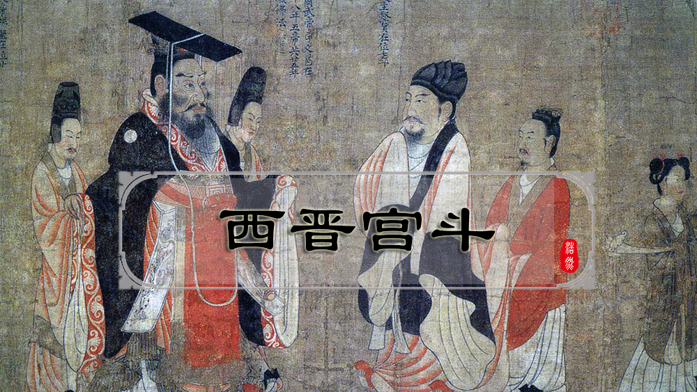
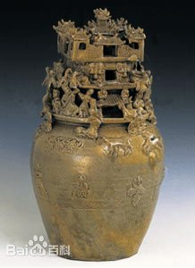
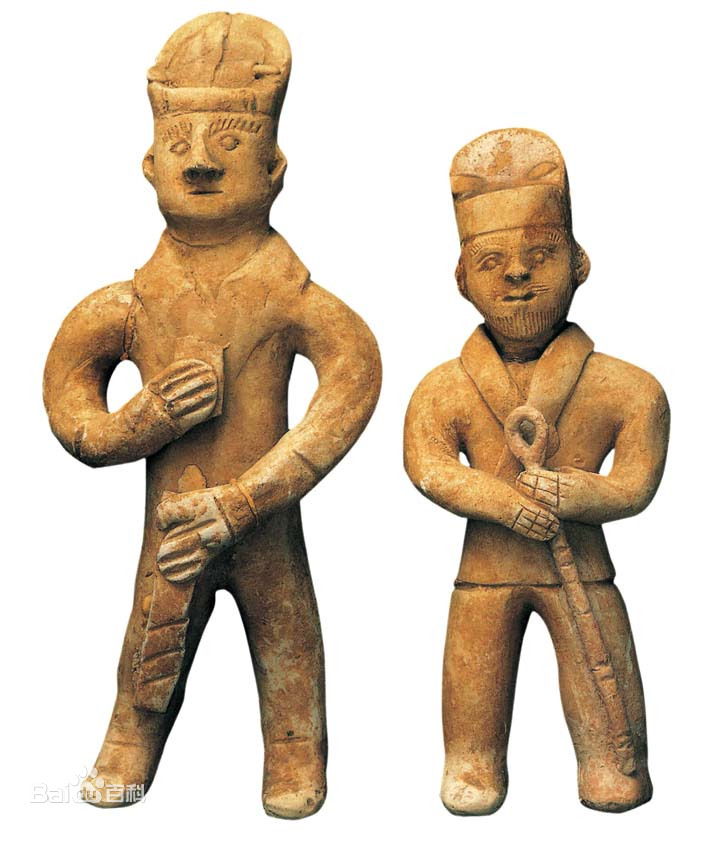

西晋（266年—316年）
西晋（266年 [1] —316年 [2] ），是中国历史上三国时期之后的统一王朝，首都洛阳。从晋武帝建国开始，传四帝，国祚51年（从灭东吴统一全国始为37年），与后来的东晋合称晋朝。 [3-4] 西晋是魏晋南北朝长期分裂时期中的短暂统一，所谓“昙花一现”。
三国末期，司马懿与司马师、司马昭二子都是曹魏权臣。司马昭死后，其子司马炎于265年取代曹魏建立新政权，改国号为晋， [5] 定都洛阳。晋280年灭孙吴，结束了三国鼎立的分裂局面，重新统一中国。据现代学者推测，永康元年（公元300年）中国人口已恢复回3500万人,形成“太康盛世”的局面。 [6] 。
西晋时期面临的外部局势是大量游牧部落内迁，关中和凉州的外族已占当地人口一半，这些外族被世族收作奴婢 [7] 。 [8] 灭吴后，西晋举国沉浸在奢侈腐败的气象之中。晋武帝出身世族，其家族经过长期发展，早就形成庞大的权贵集团，政风黑暗，贪赃枉法，贿赂风行， [9] 为西晋亡国和五胡十六国埋下伏笔。八王之乱后西晋元气大伤，内迁的诸民族乘机举兵，造成五胡乱华的局面，大量百姓与世族开始南渡。313年晋愍帝迁都长安，316年长安失守，西晋灭亡。次年，皇族司马睿在建康称帝，史称东晋。
西晋时期以仿铸造青铜器的高温烧制的青瓷闻名。西晋的文化程度也很高，名医王叔和著有《脉经》，地理学家裴秀编有《禹贡地域图》，史学名著《三国志》即由陈寿所著。
三国末期，司马懿与司马师、司马昭二子都是曹魏权臣。司马昭死后，其子司马炎于265年取代曹魏建立新政权，改国号为晋， [5] 定都洛阳。晋280年灭孙吴，结束了三国鼎立的分裂局面，重新统一中国。据现代学者推测，永康元年（公元300年）中国人口已恢复回3500万人,形成“太康盛世”的局面。 [6] 。

西晋时期面临的外部局势是大量游牧部落内迁，关中和凉州的外族已占当地人口一半，这些外族被世族收作奴婢 [7] 。 [8] 灭吴后，西晋举国沉浸在奢侈腐败的气象之中。晋武帝出身世族，其家族经过长期发展，早就形成庞大的权贵集团，政风黑暗，贪赃枉法，贿赂风行， [9] 为西晋亡国和五胡十六国埋下伏笔。八王之乱后西晋元气大伤，内迁的诸民族乘机举兵，造成五胡乱华的局面，大量百姓与世族开始南渡。313年晋愍帝迁都长安，316年长安失守，西晋灭亡。次年，皇族司马睿在建康称帝，史称东晋。
西晋时期以仿铸造青铜器的高温烧制的青瓷闻名。西晋的文化程度也很高，名医王叔和著有《脉经》，地理学家裴秀编有《禹贡地域图》，史学名著《三国志》即由陈寿所著。
 